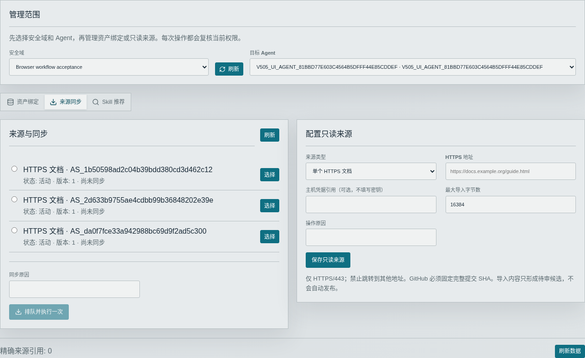
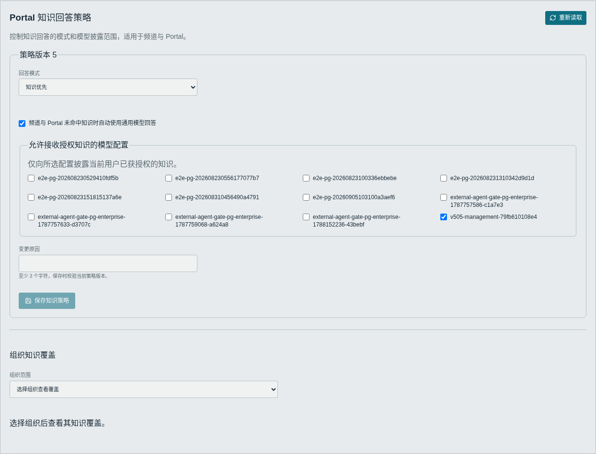
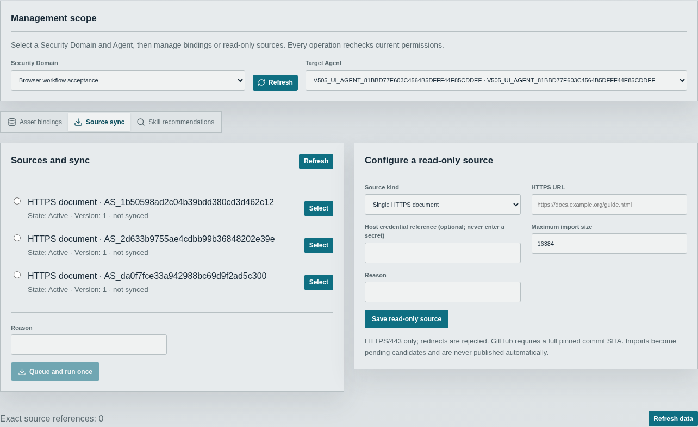
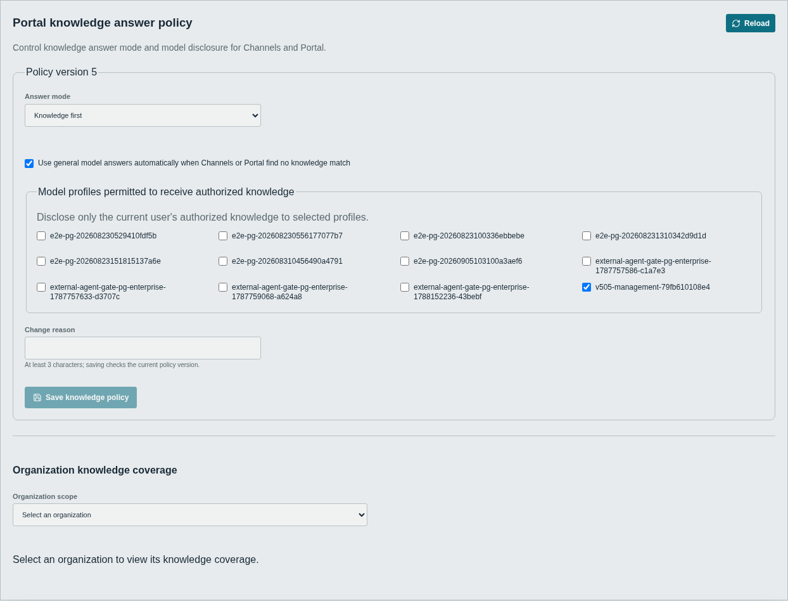

川序社区版与企业版共享基于数据库的身份、任务、协作关卡、属性图、DB4A2A、知识和记忆能力，按部署和治理需求选择交付方式。Chuanxu Community and Enterprise share database-backed Identity, Tasks, collaboration gates, property graphs, DB4A2A, Knowledge and Memory. Choose a delivery that fits your deployment and governance needs.
川序 Chuanxu Community
一个整合包，部署时选择 Oracle、PostgreSQL 或 YashanDB，Apache-2.0。One unified Apache-2.0 package; select Oracle, PostgreSQL or YashanDB at deployment.
川序 Chuanxu Enterprise
Oracle、PostgreSQL、YashanDB 三个独立企业包，BSL-1.1，按商业许可交付。Three separate Oracle, PostgreSQL and YashanDB Enterprise packages under BSL-1.1 and commercial delivery terms.
每个进程固定使用一个底座；切换需重启和独立数据库准备，不会自动迁移数据。产品名不同不代表升级包可以互换。Each process uses one backend. Switching requires restart and a separately prepared database; it does not move data. Different product identities do not make upgrade packages interchangeable.
v5.0.1 确定性部署v5.0.1 Deterministic Deployment
不依赖外部 Agent，也不让模型成为部署权限Deploy Without an External Agent or Model Authority
对已准备好的数据库目标，包内 Bootstrap Deployment Agent 先校验清单和前置条件，再执行被校验的包内 SQL，记录脱敏步骤、证据与本地节点租约，最后交接给平台管理 Agent 并退役。它不会自动创建 Oracle 或 YashanDB 的 PDB、表空间等高权限基础设施。For a prepared database target, the package-local Bootstrap Deployment Agent validates the manifest and prerequisites, then executes checked package SQL, records sanitized steps, evidence, and local-node leases, hands off to platform management Agents, and retires. It never creates Oracle or YashanDB PDBs, tablespaces, or other privileged infrastructure automatically.
部署证据Deployment Evidence
支持初始化、升级、续跑、状态与校验；未知部分模式或不匹配目标会失败关闭。Supports initialize, upgrade, resume, status, and verify; unknown partial schemas or mismatched targets fail closed.
嵌入契约Embedding Contracts
Profile、不可变 Contract、Space 与 Binding 约束模型、维度、度量、归一化、预处理和来源。Profiles, immutable Contracts, Spaces, and Bindings constrain model, dimension, metric, normalization, preprocessing, and provenance.
异步批量任务Asynchronous Batches
Dashboard 仅创建受审计任务；租约 Worker 在 HTTP 请求之外执行受限批量嵌入与重嵌入。The Dashboard creates audited jobs only; a leased Worker performs bounded embedding and re-embedding outside HTTP requests.
支持平台托管、企业直连、企业代理、预计算导入和禁用五种嵌入模式。不同 Contract、维度或预处理不能混入同一相似度或多模数据混合检索计算；历史向量保留在只读 `LEGACY_DEFAULT` 空间，需经授权重嵌入后再切换。Five Embedding modes are supported: platform managed, enterprise direct, enterprise proxy, precomputed import, and none. Different Contracts, dimensions, or preprocessing cannot enter one similarity or Multimodal Data Hybrid Retrieval calculation; legacy vectors remain in read-only `LEGACY_DEFAULT` until authorized re-embedding cutover.
按需启用Scoped Enablement
按客户实际范围配置平台能力，不削弱安全控制面Configure the Product Surface Without Weakening the Security Plane
v5.0.1 将功能状态存入数据库，适用于 POC、分阶段上线和只启用必要模块的客户环境。有效能力同时受版本包、数据库实例开关与当前主体权限约束；开关不是授权机制，也不能扩大任何用户或 Agent 的权限。身份、授权、安全、审计写入、Agent、用户和平台配置等基础控制面强制保持启用。v5.0.1 stores capability state in the database for POCs, phased rollout, and installations that need only selected modules. Effective capability is constrained by edition contents, the database instance switch, and current Principal authorization. A switch never grants authority or expands any user or Agent permission. Identity, authorization, security, audit writes, Agents, users, and platform configuration remain mandatory.
三重有效边界Three-way Boundary
版本能力、实例开关和主体权限取交集，服务端与导航使用同一结果。Edition capability, instance switch, and Principal authorization intersect; server APIs and navigation use the same result.
保留数据Data Preserved
关闭功能不删除既有数据，仅阻止新入口和专属后台活动，便于恢复启用。Disabling preserves existing data while blocking new entry points and exclusive background activity.
不可关闭底座Mandatory Foundation
安全、身份、授权和审计写入等底座不可通过配置绕过。Security, identity, authorization, and audit-write foundations cannot be bypassed by configuration.
统一界面Unified Interface
22 个 Dashboard 主要管理视图Primary Dashboard Views
监控、智能体、组织架构、任务、工作区、知识、记忆、技能、规格、分支、循环、图探索、频道、安全域、协作关卡、审批、审计、用户管理、合规、平台配置和功能配置等主要视图使用统一品牌视觉与权限模型。Graph Runtime 核心与授权检查属于稳定生产基线。草稿导入、SLO 只读检查与检查点分叉独立受控；已登记 MCP、A2A、仅元数据遥测和固定隔离框架按各自授权启用。离线回放与迁移预检只分析持久事实，真实副作用回放、运行中迁移、任意框架执行与全局自治保持关闭。Monitor, Agents, Organization, Tasks, Workspaces, Knowledge, Memory, Skills, Specs, Branches, Loops, Graph, Channels, Security Domains, Collaboration Gates, Approval, Audit, User Management, Compliance, Platform Configuration, and Capability Configuration are primary views sharing one visual and authorization model. Graph Runtime core and authorized inspection remain available. Draft import, read-only SLO views and checkpoint forks are independently controlled. Registered MCP, bounded A2A, metadata-only telemetry and one pinned isolated framework use separate authorization. Offline replay and migration preflight inspect persisted facts; live effect replay, live migration, arbitrary frameworks and global autonomy remain disabled.
当前界面示例Current interface examples

Agent 资产与来源 / Agent assets and sources · 测试数据示例 / test data

Portal 知识回答策略 / Portal knowledge-answer policy · 测试数据示例 / test data

Agent 资产与来源 / Agent assets and sources · 测试数据示例 / test data

Portal 知识回答策略 / Portal knowledge-answer policy · 测试数据示例 / test data
v5.0.5
普通 HTTP 的浏览器兼容Browser compatibility on ordinary HTTP
缺少原生 UUID 接口时使用安全随机源生成请求身份，重试保留同一幂等标识；缺少安全随机源时受控报错。内容摘要提供兼容路径，这些改进不为 HTTP 增加传输加密。Generate request identities from secure randomness when native UUID support is absent and retain the same idempotency key on retries. Missing secure randomness produces a controlled error. Content hashing has a fallback; these improvements do not add transport encryption to HTTP.
v5.0.1 Product Baseline
身份、组织、协作与受治理记忆进入同一管理界面Identity, Organization, Collaboration, and Governed Memory Share One Management Surface
版本化记忆将当前可用版本、候选复核、逻辑不可用和持久作业纳入可审计生命周期；关系图只显示当前可用版本与必要历史谱系端点，历史节点不会自动进入运行上下文。实体关系视图只保留节点与拓扑连线，不叠加难以阅读的关系文字。Versioned memory places current usable versions, candidate review, logical unavailability, and durable jobs in an auditable lifecycle. Its graph shows only usable versions and necessary lineage endpoints; historical nodes never enter runtime context automatically. The entity relationship view keeps node identity and topology without unreadable edge text.
用户管理提供只读的有效访问模拟：管理员选择一个动作，查看该用户在角色、组织、安全域、委派和显式拒绝共同作用下的最终授权结果；模拟不会修改权限。User Management provides a read-only effective-access simulator: an administrator selects one action and sees the final decision produced by roles, organization, security domain, delegation, and explicit deny. Simulation never changes permissions.
v5.0.1 数据库原生 SDDv5.0.1 Database-native SDD
让软件交付从文档协作进入数据库治理Move Software Delivery From Document Coordination Into Database Governance
数据库保存 Change、工作修订、批准基线、任务、评审、风险门禁、证据、SCM 连接和制品摘要。OpenSpec 可以生成或导入前期结构，但不控制执行阶段；多个 Agent 通过数据库中的 expected-version、读写集、租约和检查点协作，冲突或高风险状态自动暂停并等待处理。The database stores Changes, working revisions, approved baselines, tasks, reviews, risk gates, evidence, SCM connections, and artifact digests. OpenSpec can generate or import the early structure but does not control execution; multiple Agents coordinate through expected versions, read/write sets, leases, and checkpoints, while conflicts and high-risk states pause execution for review.
基线不可变Immutable Baseline
批准后的基线只读，后续变更必须产生新的工作修订并保留原因。Approved baselines are read-only; later changes create a new working revision with a reason.
协作可控Controlled Collaboration
任务角色、依赖、风险、资源租约和职责分离由数据库规则共同约束。Roles, dependencies, risk, resource leases, and separation of duties are jointly constrained by database rules.
证据可复核Reviewable Evidence
测试、评审、制品和 SCM 引用以摘要与来源留痕，形成可复核交付链。Tests, reviews, artifacts, and SCM references retain digests and provenance for a reviewable delivery chain.